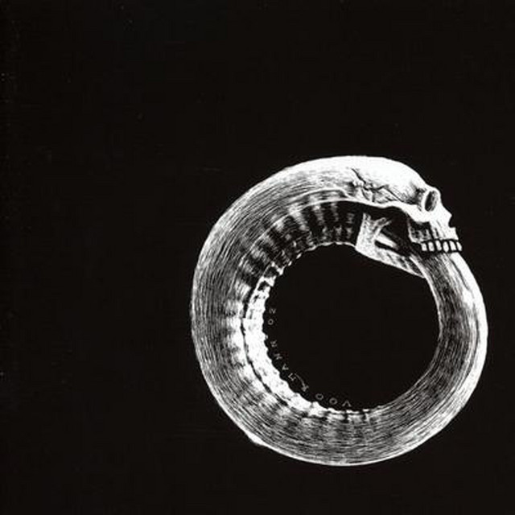

SCANDINAVIAN LEATHER
Released 2003
Musicians:
- Hank Von Helvete, vocals
- Happy Tom, bass guitar & backing vocals
- Rune Rebellion, guitar
- TK, drums
Hot Cars And Spent Contraceptives is the first album of the Norwegien death punk band, Turbonegro. The original only exist in 1000 copies.

Tracks
- Intro The Blizzard Of Flames
- Wipe It 'Til It Bleeds
- Gimme Some
- Turbonegro Must Be Destroyed
- Sell Your Body (To The Night)
- Remain Untamed
- Train Of Flesh
- Fuck The World
- Locked Down
- I Want It All
- Drenched In Blood (D.I.B)
- Le Saboteur
- Ride Wth Us
- In 2013, Mojo magazine listed "Are You Experienced" as the greatest guitar album of all time.
- The budget for the recordings was rather limited so Chas Chandler (producer) and Hendrix completed much of the album's pre-production work at their shared apartment.
- Hank Von Helvete
- Are You Experienced sold more than one million copies within seven months of its release.